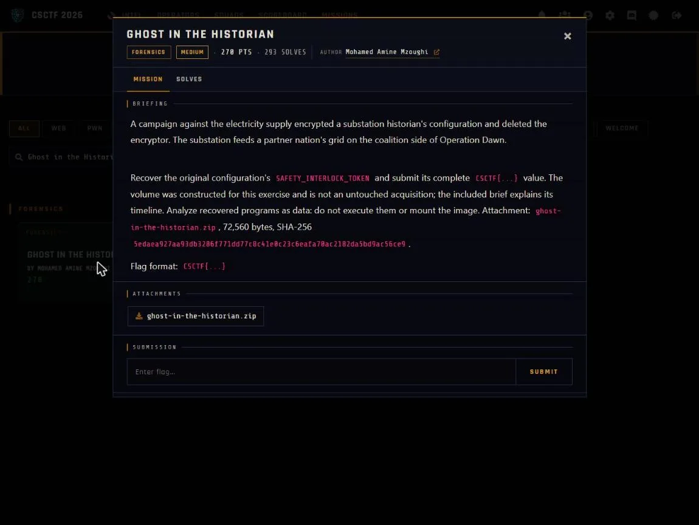

01Start point: open the disk image without mounting it
- What I did: read evidence.vmdk, a monolithicFlat descriptor pointing at evidence-flat.vmdk, then opened that raw ext4 filesystem (offset 0, volume HISTORIAN01, 4096-byte blocks) read-only with debugfs.
- What I found: /var/historian holds three encrypted files (node_status.json.enc, grid_topology.cfg.enc, historian_cache.dat.enc), and /var/log/historian.log says "historian_enc[2764964]: starting encryption sweep". Three deleted inodes exist, but their block pointers are wiped and the journal has nothing to replay.
- Thinking: mounting is forbidden, and wiped block pointers mean normal undelete is out, so the encryptor could only come back by carving raw blocks.
- Result: I have the encrypted files and the encryptor's pid (2764964).

02Pivot: carve the encryptor from ownerless blocks
- What I did: scanned the image for non-zero blocks (only 32 in the whole 64 MB) and mapped each one to its owning inode.
- What I found: five blocks have no owner. One is the ransom note and four are a 64-bit ELF PIE.
- What I did: joined those four blocks back into the encryptor binary and read it with objdump only, never running it.
- Thinking: with only 32 used blocks, the ownerless ones had to be the deleted files, and the ELF header told me which four belonged together.
03Decode: reverse the cipher and its seed
- What I found: the per-word loop is a xorshift32 keystream (shifts 13, 17, 5) seeded with (time ^ pid) * 0x9E3779B1 mod 2^32, or 0xA5A5A5A5 when time equals pid. Each 4-byte word steps the state and XORs its 4 little-endian bytes into the data.
- What I found: the encryptor keeps the state across files, walks them in scandir (alphabetical) order, utime()s each .enc to the sweep start time and then deletes the original.
- Thinking: the utime() call means each ciphertext's own mtime is the time in the seed. All three mtimes are 0x6ABF2F51 (2026-10-02 04:13:05 UTC, the same minute as the log line) and the pid is 2764964 from the log, so both unknowns were already on disk.
- Dead end: the brief's warning that the image carries two different clocks made me expect a drift or offset correction, but none applies; the seed uses the .enc mtime as-is.
- Result: seed = (0x6ABF2F51 ^ 2764964) * 0x9E3779B1 mod 2^32.
04Flag: decrypt in scandir order and read the token
- What I did: rebuilt the keystream and XORed the three files in alphabetical order, carrying the state from one file to the next.
- What I found: grid_topology.cfg decrypts to the Meridian Grid Authority Historian Node 07 config (NODE_ID=MGA-HIST-07, CHECKSUM=pending-resync) with SAFETY_INTERLOCK_TOKEN=CSCTF{xorshift_ghost_in_the_historian_d2c19434a637}. historian_cache.dat gives two PRESS,OK readings and node_status.json a nominal status for MGA-HIST-07.
- Thinking: readable plaintext in all three files confirms both the seed and the order, since a wrong order would garble every file after the first.
- Result: CSCTF{xorshift_ghost_in_the_historian_d2c19434a637}